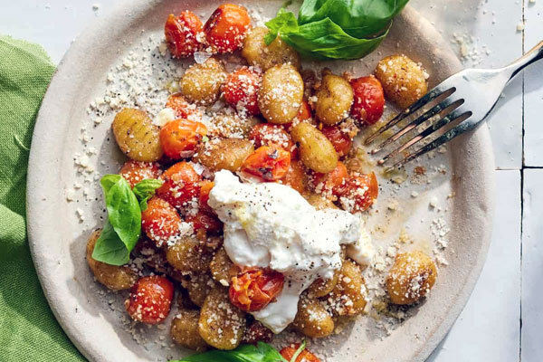

01
Italian Inspired
Tomato Basil Gnocchi
Soft potato dumplings rest in a bright, freshly crushed tomato sauce. We fold in torn basil leaves right before serving to maintain their aromatic quality. A light grating of aged vegetarian parmesan adds a gentle saltiness to the finish. This dish relies on the natural sweetness of summer tomatoes and the pillowy texture of carefully rolled gnocchi. It offers a comforting, familiar profile that works well as a main course or shared plate for the table.